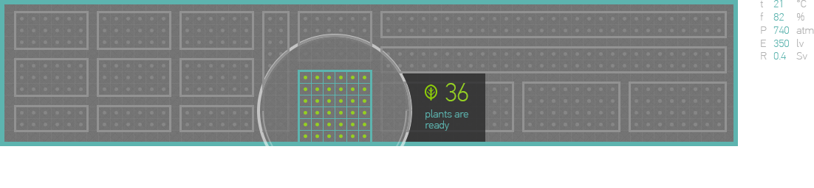
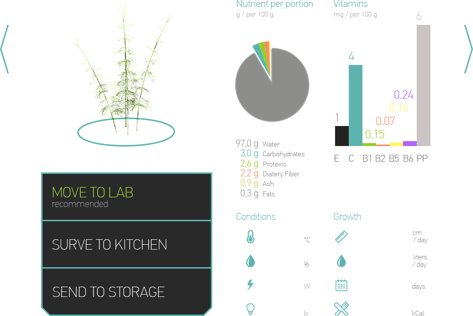

<h2 style="color:#b8f139">Medical Garden</h2>


<div style="float:right; display: inline-block; font-size: 24px; color: white; margin-top: 50px">36 plants remaining</div>

<h3 style="color:#b8f139">Bambusa balcooa</h3>
<div style="font-size:16px; margin-top: -36px">Edible</div>

